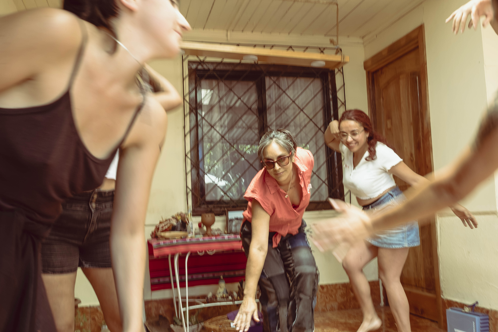

“Basta, termino diciéndome. Te refugiarás en la vida doméstica, y te anularás, lanzándote de cabeza en el cuenco de la masa de galletas con mantequilla.” Sobre los diarios de Virgina Woolf. Palabras de inicio en la jornada de “La Oncesita.
La invitación fue a “tomar once” y conversar sobre cuidados, gestión y artes. El sábado 8 de junio, la biblioteca de la Escuela Luis Galdames, de la comuna de Rengo, dejó de lado su arquitectura que invita al silencio y la lectura ensimismada, las mesas rígidas y dispuestas para foros de debate académico, y fue vestida de cocina y comedor. Y entre el olor a comida y las mesas abarrotadas de sopaipillas caseras, pan amasado calentito, palta, huevo revuelto, café y tecito, se dio inicio a “La Oncesita”. — La Oncesita, es querer replicar este espacio donde se ha delegado siempre, hasta ya unos años, el espacio de las mujeres, que es la cocina— dijo Cristina Santos Vargas, tramoya, performer del evento y encargada de finanzas de la Cooperativa Húmeda Tierra, organización que junto a Rengo Creativo y Corrigüela Emporio Cultural generaron esta instancia colaborativamente. — Porque aquí es un lugar donde se hace y se deshace constantemente, se crea, y se come lo creado, los alimentos ¿cierto? — expresó Santos — Y finalmente, es una forma de hacer comunidad. Juntarnos a tomar once, a conversar, a conspirar sobre distintas cosas. Es un espacio amoroso. — El enfoque era un seminario/conversatorio [...] Y me pareció interesante poder tener una metodología participativa mucho más dinámica que sólo personas sentadas y hablando — contó Gittel Villablanca Zaraff, moderadora y organizadora del evento desde Emporio Corrigüela—. Entonces le dimos rienda al proceso creativo de “La Oncesita”, lo que involucró pensar desde el lugar, hasta la cuchara que íbamos a usar, el cuchillo, considerar aspectos de la once chilena. Pero antes de partir el pan, echarle agua caliente a las tazas, y comenzar a conversar sobre cuidados en la mesa, la Señora Josefina Railaf, profesora y miembra de la comunidad mapuche la Epu Newen, de Rengo, abrió el espacio, pidiendo permiso a nuestros ancestros y los elementales en su lengua mapuche, y guiando sonoramente con sus cascabeles a los 26 participantes de la once, a saludar a los 4 rumbos para levantar el newen (la energía) del lugar. —Chaltumay (Gracias)—. Finalizó Josefina, y dio paso a la presentación de las panelistas invitadas: Francisca Fernández, Valeria Acuña, Karen Viviani y Virginia Ramírez. Cuatro mujeres dedicadas al arte, la gestión y el activismo desde diferentes lugares.
La moderadora de “La Oncesita”, Gittel Villablanca, abrió el debate con la siguiente pregunta: —En general ¿qué es para ustedes cuidar? El espacio quedó en un silencio reflexivo, hasta que Francisca Fernández Droguett, antropóloga de profesión, pero también, en sus propias palabras: una “Danzante”, y activista que integra el Movimiento por el Agua y los territorios MAT, tomó la palabra enérgicamente, y mostró un afiche sobre este tema, leyéndolo: «Haz una política de cuidados desde los buenos vivires». —Una primera política y ética de los cuidados es asumir un ejercicio profundamente anticapitalista y comunitario colectivo — expresó Fernández, y puso énfasis en que muchas veces los cuidados se han reivindicado en un ejercicio individualizante, y es fundamental politizarlo—. Siempre está el delgado hilo de la naturalización del cuidado como si fuera el lugar histórico y permanente que tuviésemos que estar [...] Y también queremos estar, porque es relevante. —Piensen ustedes, históricamente ¿Cuál ha sido el lugar más potente de organización política? Las ollas comunes. La resistencia sindical (siglo XX) siempre dijo: ¿qué más revolucionario y complejo que organizar un comedor popular o una olla común? Ahí hay unos saberes desplegados que te permiten sostener una revolución— dijo La “Pancha” Fernandez, de manera fluida, incluso rápida, como si sus ideas estuviesen presurosas de salir y ser compartidas. La antropóloga también comentó una campaña sobre cuidados hacia la mujer -en pos de prevenir la violencia doméstica- producida por la multinacional Anglo American, e invitó a entender esta temática en diferentes niveles. Por ejemplo: la escasez hídrica. —¿Qué pasa con los cuerpos gestantes? ¿Qué pasa con los cuerpos que están amamantando? ¿Qué pasa con los cuerpos menstruantes cuando no tienes agua? Y ahí decíamos, hay una dimensión política de los cuidados [...] Fue intenso, pero bueno, pa’ partir. Pa’ que se atraganten después. Eso es pa´ tomar un tecito tranquila —finalizó su palabra entre las risas de todos los asistentes al evento. Valeria Acuña Rodríguez, madre y psicóloga comunitaria, colaboradora de la Colectiva Pascay y conocida como “La Corazona” -por su proyecto de narrativas desde el fanzine-, comentó la importancia de repensar los cuidados, y desde donde. «¿Cuantas sobremesas quizás hemos habitado nosotras con las amigas, con las compañeras, donde hemos hablado precisamente de estos temas?» dijo. Acuña se refirió a cómo la naturalización de los cuidados, para ciertos cuerpos subordinados al sistema, los ha tornado “invisibles, no existen, los damos por hecho, los damos por sentado y no hablamos de eso. Y si hablamos de eso lo hablamos claro, desde la esfera del malestar”, expresó. —Trabajo desde la salud mental, y me atrevo a decir que la psicología ha sido de las primeras cómplices en patologizar los malestares que emergen desde los cuidados. Patologizar las rabias, por ejemplo, las tristezas y hablar de que la gente está quemada, que está deprimida, y que las madres tienen depresión post parto. Entonces es mucho más fácil hablar de que las madres tienen depresión post parto a hablar de cómo están siendo los sistemas en los que las mujeres están maternando —dijo “la Corazona”—. Coincido mucho con lo que dice la Pancha, de que no es posible pensar los cuidados si no los pensamos también colectiva y comunitariamente y desde los distintos sistemas. Desde la mirada de Karen Viviani Pulgar -madre, gestora cultural y una de las organizadoras del evento desde la Cooperativa Húmeda Tierra-, y complementando las ideas anteriores de las panelistas, expresó: «También agregaría a esto de los cuidados la acción de organizar». — Desde mi rol, siempre gestionando cultura, gestionando cosas, me he dado cuenta que en esa acción de gestionar, cuido mucho. Por más que algo me mueva y me gusta, quizás, como organizarme con mis compañeras, es porque me gusta cuidar a mis compañeras, me gusta cuidar a mis amigas. Entonces no deja de ser bonito, porque cuando cuido a mis amigas, estoy gestionando algo —dijo Viviani—. Esa es toda una acción de cuidados que cotidianamente hacemos [...] Y finalmente estamos vivos porque alguien nos cuidó. Existimos, la vida existe gracias a que otres nos cuidaron, y como ustedes dicen, para mi es totalmente algo colectivo. —¿Me acercan sus tazas?— dijo Nicole Matamala, Presidenta de la Cooperativa Húmeda Tierra, quien, al costado de las panelistas tiene instalada una cocina, prepara huevos revueltos y se dispone a servir y cuidar a las invitadas. Mientras Virginia Ramírez Lucero -Artista Visual y Coordinadora, Cofundadora y Gestora de la sala de arte “La Palmilla Oriente”- toma la palabra, se escucha de fondo el choque de las cucharitas en las tazas de té. — A pesar que llevo muchos años hablando de los cuidados, no sabría llegar a una definición específica — expresó Ramírez—. Porque creo que los cuidados son, en parte, gestos, en parte son modos, en parte son formas, de preservar vínculos, de preservar vidas, de preservar memorias, imaginarios, estéticas, territorios, lugares [...] Lo que hay en común tiene que ver con la preservación, con permitir que algo que hoy existe siga existiendo a lo largo del tiempo, a pesar de todo, a pesar de lo que tenemos en contra. — Finalmente, el cuidado como de lo cotidiano, de las pequeñas cosas, de los vínculos que nos sostienen, o de mis pequeños espacios va permitiendo encender y sostener esa llamita de la esperanza— expresó con convicción Virginia—.Sostengamos las luchas que ya llevamos un tiempo, y que antes de nosotras veían otras, probablemente mañana, cuando no estemos, las sostengan otras. Pienso en la lucha feminista y pienso enmuchas otras. Y claro, también hay un cuidado transversal al cuidar esas batallas que son mías, y que a la vez que no son mías, porque son de todos.
—La gestión también está ligada a un cuidado, a una presentación de memorias, de imaginarios, de estéticas, de visualidades— Reflexionó Virginia, desde su campo de investigación y creación en las artes visuales, cuyo imaginario se vincula con el “quehacer doméstico” —pero que también está ligado inevitablemente a una clase y un género. Según explicó durante “La Oncesita”, “las artes permiten, o facilitan la preservación de aquellas cosas que son intangibles”. Y al romper con la distancia críptica de su área de trabajo y creación, acercarlos a personas y grupos sociales invisibilizados, se pueden cuidar memorias e identidades, hacerlas perdurar, y la clave de la gestión, en ese sentido, está en generar espacios no ajenos a imaginarios excluidos. Desde la experiencia de Francisca Fernández, tanto en las ciencias sociales como en la danza, y el teatro, este último un lugar «donde justamente, desde los quiebres, los dolores, se gestionaba un nivel de violencia y autoritarismo que a mí me marcó muchísimo», explicó, es complejo pensar y accionar gestiones en clave de cuidados a nivel de oficio, de trabajo, por ejemplo, desde la gestión pública, que «de cuidado no tiene nada, de hecho, muchas veces está pensada en la lógica de la competencia, las ganancias», expresó en el evento. — Y de ahí, decidí políticamente, seguir danzando haciendo intervenciones, pero en espacios colectivos— dijo “La Pancha”. En su trabajo en el colectivo Cueca Sola, al realizar ejercicios memoria respecto de quienes danzan -ejecutados políticos, detenidos desaparecidos, la historia propia-, « siempre tenemos el horizonte de los cuidados, porque son narrativas bien dolorosas», dijo Fernandez, y agregó, «nuestras compañeras bailarinas formales nos cuentan, que es todo lo contrario a lo que ellas evidencian en los espacios del trabajo». Para ella, en eso radica lo potente de esos lugares, levantados desde la autogestión y colectividades. — Llegué a las artes y las culturas, porque me di cuenta que la forma de hacer arte y cultura muchas veces es colaborativa, asociativa. Uno se asocia pa’ poder crear una obra de teatro, pa’ poder crear algo, hay un montón de gente trabajando en ese proceso artístico. Pero estábamos, estamos en la ruina — dijo Karen Viviani, desde su quehacer como gestora cultural—. Es impresionante como no se puede trabajar en esto, no puedes vivir de eso, porque si no vienes de una clase alta, que te sostengan y te paguen la obra, o que te la publiquen o un montón de cosas, no te sostienes. —Bueno, y cómo nos cuidamos entre todas pa’ eso? Pa’ que la compañera le alcance a fin de mes para comprar y parar la olla ¿cachai? [...] Necesitamos una forma de economía— compartió Viviani con las comensales de la sala, y citó como ejemplo la creación de la Cooperativa Húmeda Tierra, y la exploración que tuvieron en cuanto a economías sociales y solidarias — Porque hoy en día nos formamos pa’ eso al final, para poder sostener y poder cuidarnos. —Hay un puentecito, pareciera ser, como en todas esas cosas. Y pensaba mucho en esto de la autogestión. Como que una se autogestiona todo, y yo creo que gran parte de todo lo que hago es como muy autogestionado, pero creo que “lo auto” individualiza un poco ¿no?— dijo Valeria Acuña—. Como si fuera yo sola la que está sosteniendo todo eso [...] Pensaba que en toda la trayectoria que tuve que pasar para llegar a decir: «Oye, voy a publicar un fanzine», que hable sobre el miedo de las mujeres, a propósito de las experiencia de abuso sexual [...] Hubo todo un recorrido, y ese recorrido en general, estuvo lleno de colaboración. Para “La Corazona”, es fundamental entender la gestión como algo colectivo, histórico y social, para facilitar y sostener ese espacio - la publicación de fanzines-,y que ocurriera en un contexto general patriarcal y hegemónico tradicional. —“No podría concebir, quizás lo que yo hago, sin pensar, como en todo lo que han trabajado las compañeras para apropiarse de esos espacios. Para recuperar esos espacios, para tomar esos espacios de divulgación, de poder mostrar, de poder compartir, desafiar las lógicas más capitalistas: Páguese una feria, páguese un stand, para que usted muestre lo que hace, y generar también, al mismo tiempo alternativas de economía [...] Finalmente, eso también es cuidado — expresó Acuña. La sobremesa pudo haberse extendido aún más de las casi 2 horas y media de diálogos: Aún quedaba comida y ganas de seguir conversando sobre estos temas, pero el tiempo se agotó. —Me encantó lo amistoso, como lo cotidiano de tener prácticamente una cocina, que todos nos pudiéramos sentir en confianza.— Dijo Eugenia Burta, asistente al evento— Esa como mezcla mística, mágica, de estar con un grupo de amigas, pero a la vez estar escuchando mujeres tremendamente power. Quedé con el corazón llenito [...] porque son temas, como decían las chiquillas, que una piensa que los está viviendo sola, pero la verdad es que estamos todas tejiendo esta red hermosa. Respecto a la realización de una próxima jornada, Nicole Matamala, Presidenta de la Cooperativa Húmeda Tierra, expresó: «Desde lo personal me gustaría mucho poder habitar espacios ciudadanos con una “oncesita” [...] Sería muy feliz si se repite». El evento finalizó con una performance entre la intérprete en danza y artes circenses Sue Valenzuela, guiada por las palabras de la intérprete vocal Cristina Santos recitando un poema:
“Me sano junto a ustedes choco mis dedos a sus hojas les pido y honro su newen porque tengo miedo mis amadas miedo de que el tiempo no me de chance”.